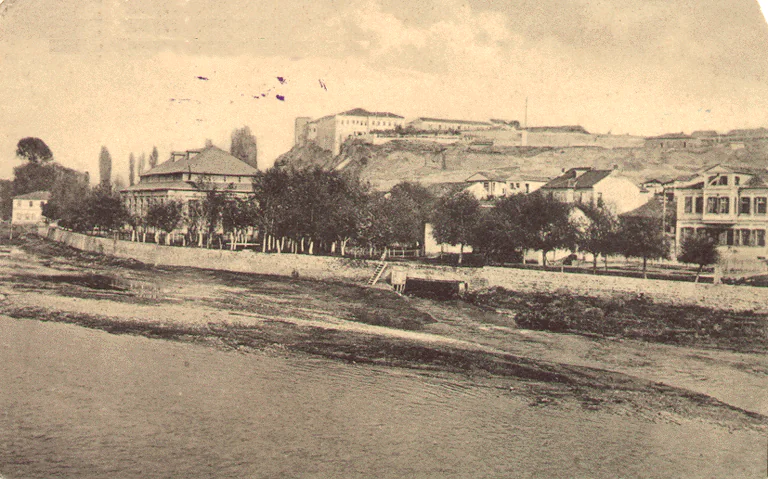
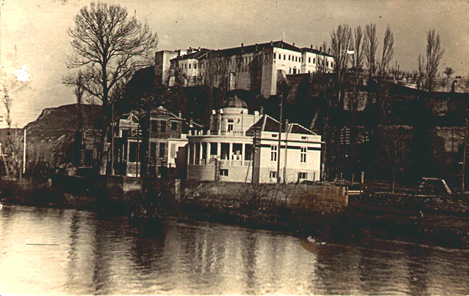
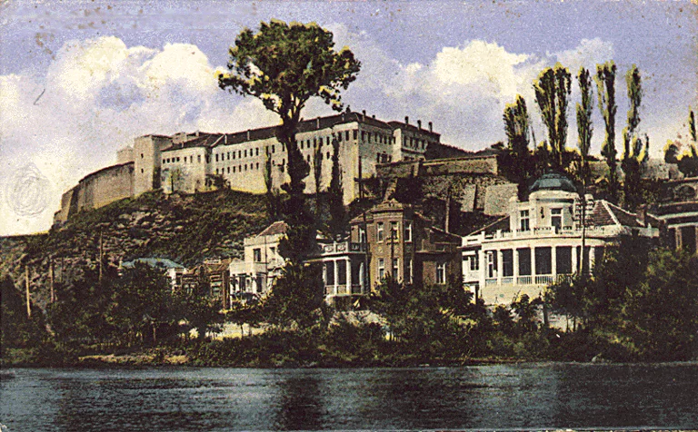
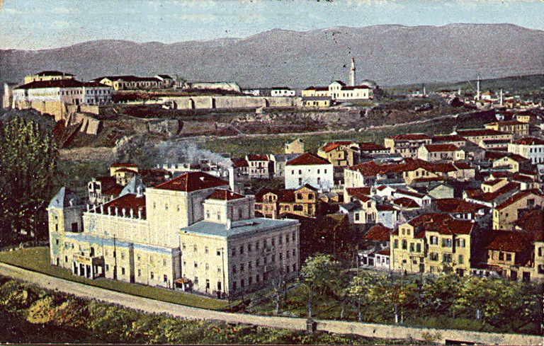

Кале
- Производство
- УФУЖ и Документарен филм Прага
- Сценарио и режија
- Славко Јаневски и EMAN CANERA
- Година
- 1959
- Должина
- 00:10

Влезот во скопската тврдина - Кале. (почеток на 20 век)
Едно од најдоминантните места во центарот на градот Скопје го завзема Скопската тврдина - Кале*. Археолошките ископување покажале дека Кале било населено уште во праисториското време - во времето на неолитот и раното бронзено доба. На Кале се живеело поради неговата извонредна стратешка положба. Со проучувањето на градбата е утврдено дека во основите е користен материјал од Скупи, кое било скоро цело разрушено во катастрофалниот земјотрес 518 година. После тој земјотрес градот се сели на денешната локација. Било изградено утврдување кое низ вековите се проширува и зајакнува. Денеска е останат само мал дел од тоа утврдување, кој е реставриран и во неговата средина е направено шеталиште.
*(Кале на турски јазик значи тврдина, а народот го усвоил зборот како скратено име за скопската тврдина)

Скопската тврдина - Кале со дел од нејзините ѕидини.
- почеток на 20 век

Скопската тврдина - Кале - 10-тите години.

Скопската тврдина - Кале - снимена од страната на денешен парк, крајот на 19 век.

Скопската тврдина - Кале - 10-тите години.

Скопската тврдина - Кале - 10-тите години.

Скопската тврдина - Кале. Снимена од локацијата на денешен парк, 10-тите години.

Скопската тврдина - Кале. Снимена од локацијата на денешен парк, 10-тите години.

Поглед на скопската тврдина - Кале. 20-тите години.

Поглед на скопската тврдина - Кале од северната страна.
- 10-тите години.

Прекрасна фотографија на градот и течението на р.Вардар. Лево е скопската тврдина - Кале. Централно се гледаат објектите на Офицерски дом и Народната банка. Десно е планината Водно, а во далечина се рабовите на планината Китка
.- крај на 20-тите години.

Скопската тврдина - Кале и старата кафеана "Богес", во која се собирале глумците и се одржувале првите театарски претстави - почеток на 20 век.

Скопската тврдина - Кале со касарнските објекти - 1911 година. Под тврдината се гледа старата кафеана "Богес".

Скопската тврдина - Кале и старата кафеана "Богес"
- крај на 10-тите години.

Фотографијата е снимена од Камениот мост, околу 1910 година. Лево се гледа стариот турски театар, а над него скопската тврдина - Кале.

Фотографијата е снимена од Камениот мост, околу 1910 година. Лево се гледа стариот турски театар, а над него скопската тврдина - Кале.

Скопската тврдина - Кале и старото еврејско маало под него - крај на 10-тите години.

Скопската тврдина - Кале, со дел од куќите во еврејското маало кои се во изградба - 20-тите години.

Скопската тврдина - Кале, а под него дел од куќите од еврејското маало - 20-тите години.

Скопската тврдина - Кале и новоизградените објекти во еврејското маало - 20-тите години.

Скопската тврдина - Кале со дел од куќите од еврејското маало - 20-тите години.

Скопската тврдина - Кале и новоизградените објекти во еврејското маало - 20-тите години.

Скопската тврдина - Кале. Под неа се дел од куќите од еврејското маало - 20-тите години.

Скопската тврдина - Кале и новоизградените објекти во еврејското маало - 20-тите години.

Поглед на скопската тврдина - Кале од една од улиците во еврејското маало - 20-тите години.

Фотографија направена од Официрски дом - околу 1930 година. Прекрасна фотографија на Народниот театар, дрвеното мовче и скопската тврдина - Кале.

Во преден план е Народниот театар, а над него се издигнува скопската тврдина - Кале - 30-тите години.

Фотографија на скопската тврдина - Кале, во која добро се видливи составните објекти на утврдувањето. Под тврдината се гледа Народниот театар со сета своја убавина.
- 30-тите години.

Фотографија на скопската тврдина - Кале, во која се добро видливи составните објекти на утврдувањето. Под тврдината се гледа Народниот театар - 30-тите години.

Во преден план е Народниот театар, а над него се издигнува скопската тврдина - Кале - 50-тите години.

 Аквадукт4 разгледници
Аквадукт4 разгледници Кале30 разгледници
Кале30 разгледници Мостови60 разгледници
Мостови60 разгледници Кеј58 разгледници
Кеј58 разгледници Плоштад46 разгледници
Плоштад46 разгледници Објекти66 разгледници
Објекти66 разгледници Христијански храмови19 разгледници
Христијански храмови19 разгледници Муслимански објекти33 разгледници
Муслимански објекти33 разгледници Офицерски дом29 разгледници
Офицерски дом29 разгледници Театар28 разгледници
Театар28 разгледници Железничка станица13 разгледници
Железничка станица13 разгледници Училишта36 разгледници
Училишта36 разгледници Паркови12 разгледници
Паркови12 разгледници Пазари18 разгледници
Пазари18 разгледници Улици38 разгледници
Улици38 разгледници Панорама I60 разгледници
Панорама I60 разгледници Панорама II30 разгледници
Панорама II30 разгледници Колажи55 разгледници
Колажи55 разгледници Поплави9 разгледници
Поплави9 разгледници Земјотрес27 разгледници
Земјотрес27 разгледници Скопје 200026 разгледници
Скопје 200026 разгледници